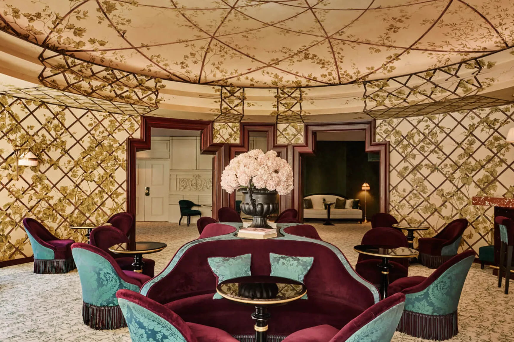
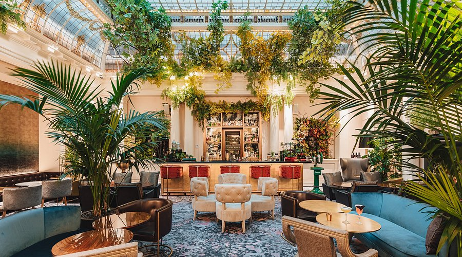
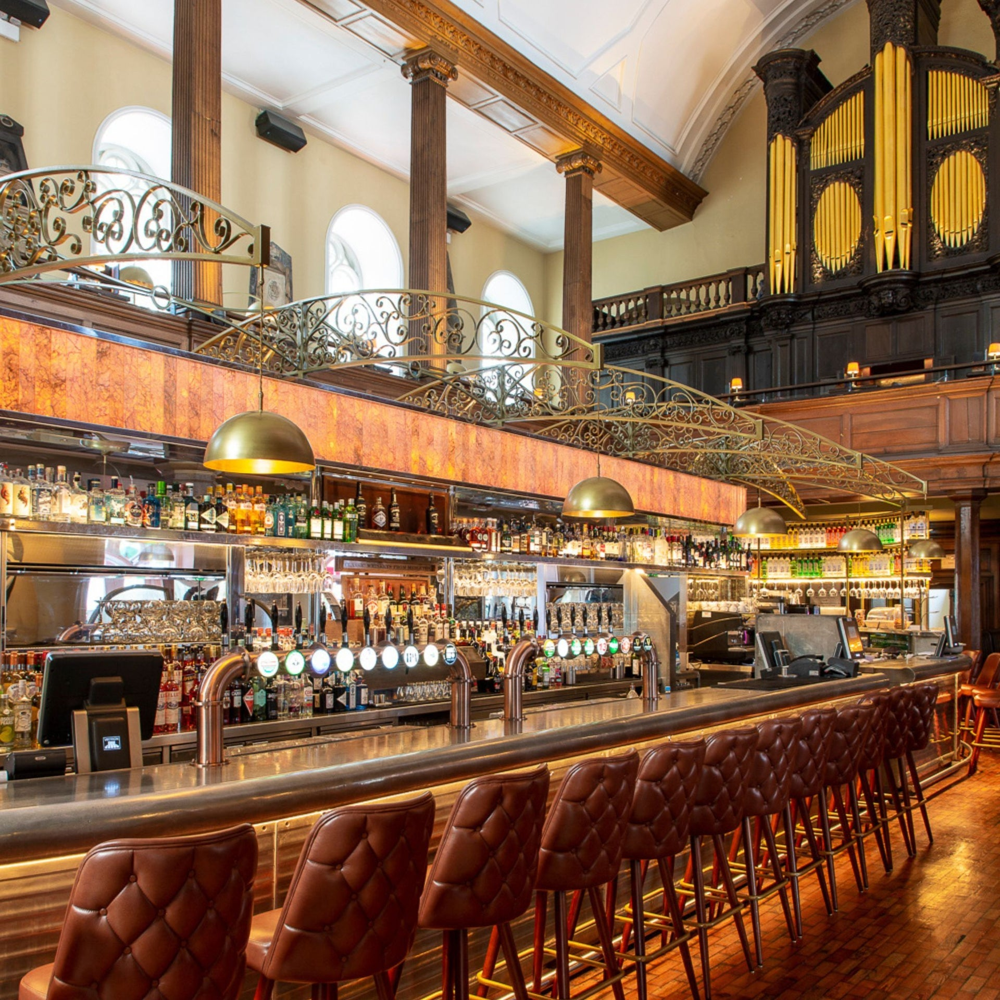

2026
Restaurant Amazonia ↗
Chef de rang
Brasserie touristique proche de la Tour Eiffel, où j’ai contribué à l’ouverture de l’établissement et à la mise en place du service.
Arthur ROUX · Restauration & Hôtellerie
Du café à l'Hôtel 5*, découvrez mes expériences en restauration, étape après étape.
Découvrir mon parcours
Chef de rang
Brasserie touristique proche de la Tour Eiffel, où j’ai contribué à l’ouverture de l’établissement et à la mise en place du service.

Barman
Établissement prestigieux où j’ai appris l’art de la création de cocktails, dans l’exigence d’un Hôtel 5*.

Barman
Lieu mythique où j’ai fait mes premiers pas dans l’hôtellerie de luxe.

Barman
Ancienne église transformée en gigantesque bar-restaurant, avec un très gros flux de clients, où j’ai appris l’anglais.